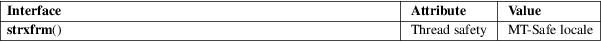

strxfrm − string transformation
Standard C library (libc, −lc)
#include <string.h>
size_t
strxfrm(char dest[restrict .n],
const char src[restrict .n],
size_t n);
The strxfrm() function transforms the src string into a form such that the result of strcmp(3) on two strings that have been transformed with strxfrm() is the same as the result of strcoll(3) on the two strings before their transformation. The first n bytes of the transformed string are placed in dest. The transformation is based on the program’s current locale for category LC_COLLATE. (See setlocale(3)).
The strxfrm() function returns the number of bytes required to store the transformed string in dest excluding the terminating null byte ('\0'). If the value returned is n or more, the contents of dest are indeterminate.
For an explanation of the terms used in this section, see attributes(7).

C11, POSIX.1-2008.
POSIX.1-2001, C89, SVr4, 4.3BSD.
memcmp(3), setlocale(3), strcasecmp(3), strcmp(3), strcoll(3), string(3)